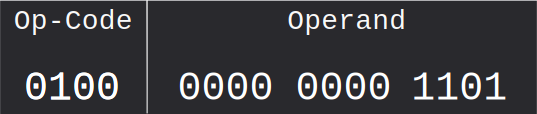
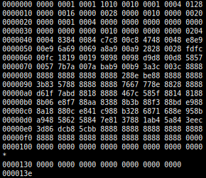

Table of Contents
- Machine Code
- Instruction Sets
- The Fetch-Execute Cycle
- Key Words & Definitions
Machine Code Instructions
Summary
Digital computers can operate only on binary information. Instructions are no exception to this; they must be converted to 'machine code' (instructions in binary) before being processed. A machine code instruction consists of an operand and an op-code specifying the operation to perform upon it; Assembly language is a set of mnemonics for these operations to make programming with them easier. Hexadecimal addresses are generally used for memory locations, as they are easier for humans to remember. A memory dump may be used to debug a machine code or Assembly program. "A Machine Code Instruction is a binary code that machines can execute."Since digital computers (as the name implies) work solely in discrete logic levels, the instructions which are to be issued to a programmable digital computer are invariably in binary; "Machine Code". Machine code is the lowest level of instruction; it is what is stored on disk, loaded into main memory and executed by the processor. High-level languages work in one of several ways: they use a compiler to convert the language into machine code, often via an intermediate, they use an interpreter to execute their code statement-by-statement, "on the fly". The statements are not compiled into machine code, but instead the interpreter decodes them and executes them using its own routines.
A machine code instruction consists of an op-code and an operand. They are in different parts (of a pre-determined bit length) of the instruction:
Note that the operand consists of a single item of binary data (or the address thereof).
Assembly code may be thought of as a direct representation of machine code; instead of
the op-code (eg 0100 1011) one uses a mnemonic such as ADD. Assembly language is
converted to machine code by an Assembler. From here onwards, the Assembly names will
generally be used to refer to a machine code operation.
A machine code operation might be something like LOAD—which loads data from main memory into the accumulator—
or ADD—which adds the value specified (which may be an address or a constant value)
to the value in the accumulator. There are also branch commands, such as jz addr, which
jumps to the specified program counter value if the 'zero' flag in the processor has been set by the
previous operation; here, "jz" stands for "jump if zero".
Even if you are hard-core enough to program in machine code, it is generally a pain to recall and enter long binary opcodes. For this reason, those real programmers who use machine code regularly almost invariably use hex (i.e. base 16) rather than binary. This is especially pertinent in the modern day, when memory addresses may be very large, and spread across several pages of memory.
When a Real Programmer (one who uses Machine Code) debugs a program (which he must often do),
he
asks for a memory dump. This involves printing out the contents and addresses of all of the
memory currently in use by the program; it may then be manually analysed, although this is a very
arduous task in increasingly high-memory situations. A memory dump might look like this (Mwtoews/Commons, GNU FDL):

Fun, eh?
Instruction Sets
Summary
The instruction set is the set of op-codes which a given architecture (e.g. Intel x86) supports. Addressing modes are part of an op-code which specifies how to find the operand.
An Instruction Set may be considered as the set of legal opcodes which can be passed into the
CPU; for instance, if one had an instruction set with only one bit, one could only pass in two instructions.
These might be add x and load reg.
In the real world, one of the most common desktop instruction sets is Intel's x86, with AMD64 (a 64-bit extension of the 32-bit x86 set) also very popular. The x86 instruction set (so named because it first appeared on Intel's xx86 series of chips) supports a variety of instructions in addition to the core of mathematical ones; for instance, most modern Intel i386 chips come with built-in AES instructions, which permits use of a highly optimised hardware encryption system.
Each instruction is usually an opcode followed by an operand; the form this operand takes may vary. The way in which the operand relates to the value and location upon which the operation should be performed is determined by setting the addressing mode in the op-code.
mov #10, eax moves the constant value "10" into the accumulator (eax).
This is an example of direct addressing; the address targeted (eax) is the address passed in. The book terms this "Operand to register transfer"
j +2 advances the program counter by 2. This is used as a flow control statement.
This is an example of PC (program-counter)-relative addressing. The book does not mention it.
nop performs no operation (used in delay functions e.t.c.)
This has no operand; the book describes it as "Operand part not used".
load FFEAE3 loads the item at memory location FFEAE3 into the accumulator.
This is termed a "register transfer involving main memory", which is a fair description!
In short, the different addressing modes control how the operand is found.
Fetch-Execute cycle
Summary
Almost all stored-program computers perform some variant on the Fetch-Execute cycle, which always involves several key registers. Instructions are fetched, decoded and executed one by one.Key registers:
- PC: Program Counter; keeps track of the next instruction to be executed. May be incremented non-linearly by jump instructions (not on syllabus).
- MAR: Memory Address Register; stores the address in memory being either read from or written to.
- MBR: Memory Buffer Register. Also known as MDR (Memory Data Register). Stores data received from main memory until it is used; may also be used when writing to main memory.
- CIR: Current Instruction Register. Not to be confused with the Program Counter. This holds the latest instruction retrieved.
Without further ado, the Fetch-Execute Cycle:
- The address of the next instruction is transferred from the PC to the MAR.
- The memory read flag is raised and the resultant data transferred to the MBR.
- (Simultaneous with previous point) The program counter is incremented.
- Contents of the MBR copied to the CIR.
- Instruction now held in the CIR is decoded and executed.
Key words
- Machine Code: "a binary code which a machine can execute." The book states "which a machine can understand and execute", but getting into a debate on the nature of understanding in the middle of a computing examination would seem to be an idea of questionable merit.
- Op-Code: "the part of a machine code instruction that denotes the basic machine operation, e.g.
add." - Operand: "The part of a machine code instructino that represents a single item of binary data or the address thereof."
- Compiled High-Level Language: "A language translated into machine code before it is executed on a digital computer." I do not much like this definition, since it seems unnecessary given a more general knowledge of the subject.
- Instruction Set: "The set of bit patterns or binary codes for the machine operations that a processor has been designed to perform."
- EPIC: Extended Parallel Instruction Computing. "As well as the instruction to be executed...contains information on how to execute the instruction in parallel with others." This is implemented (most notably at present) in Intel's Itanium framework, which is used primarily for servers and is not very popular, partially because the architecture is different enough to require code rewrites.
- Addressing Mode:"denotes how the operands should be interpreted." Need to know following three:
- Register Transfer Involving Main Memory
- Operand to Register transfer
- Operand part not used.
- Register names: see Fetch Execute Cycle.